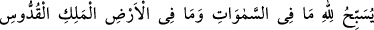
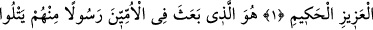
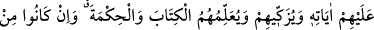
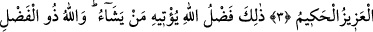
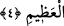

PEYGAMBER GÖNDEREN O’DUR
Bismillâhirrahmânirrahîm
1. Göklerde ve yerde olanların hepsi, mülkün sâhibi, eksiklikten münezzeh, azîz
ve hakîm olan Allah’ı tesbih eder.
2. Çünkü ümmîlere içlerinden, kendilerine âyetlerini okuyan, onları temizleyen,
onlara Kitab’ı ve hikmeti öğreten bir peygamber gönderen O’dur. Kuşkusuz onlar
önceden apaçık bir sapıklık içindeydiler.
3. (Peygamberi) müminlerden henüz kendilerine katılmamış bulunan diğer
insanlara da göndermiştir. O, azîzdir, hakîmdir.
4. Bu, Allah’ın lütfudur. Onu dilediğine verir. Allah büyük lütuf sâhibidir.
“Göklerde ve yerde olanların hepsi” canlı cansız bütün varlıklar sürekli olan
tesbihlerle “Allah’ı tesbih eder.” Göklerde bulunanlar güzel bir sana’atın eseri olan
yüce varlıklardır. Yerdekiler ise aşağıda bulunan varlıklardır. Her biri de hayat ve
tesbihleri bakımından Allah’a âiddirler. “Mülkün sâhibi, eksiklikten münezzeh, aziz ve
hakim olan Allah’ı tesbih ederler.” Allah azizdir, irâde buyurduğu her şeye üstün ve
galip olandır. Hakîmdir, sonsuz güzellikte, üstün hikmet sâhibidir. “Melik:” “Mülkü ve
idaresi dâimî ve zevalsiz bir padişah”, “Kuddûs:” “Ayıp ve bozukluk yönünden pâk
olan” demektir. Bu güzel isimlerin anlamları Haşir sûresinde geçmişti. Âlimlerin
çoğunluğu, Melik, Kuddûs, Azîz ve Hakîm kelimelerinin, Allah isminin sıfatları olduğu
görüşündedirler.
Fakîr (Bursevî) derim ki, Allah Teâlâ’nın bu sûre-i celile’ye “tesbih” kelimesiyle
başlamasının sebebi, Peygamberimiz’in (s.a.) peygamber olarak gönderildiğinden
bahsedilmekte olmasındandır. Çünkü âlemin bir mürşidinin olmaması ilâhî hikmete
aykırıdır ve Allah’ı ondan tenzih etmek gerekir. Ayrıca yahûdilerin, Allah’ın oğulları ve